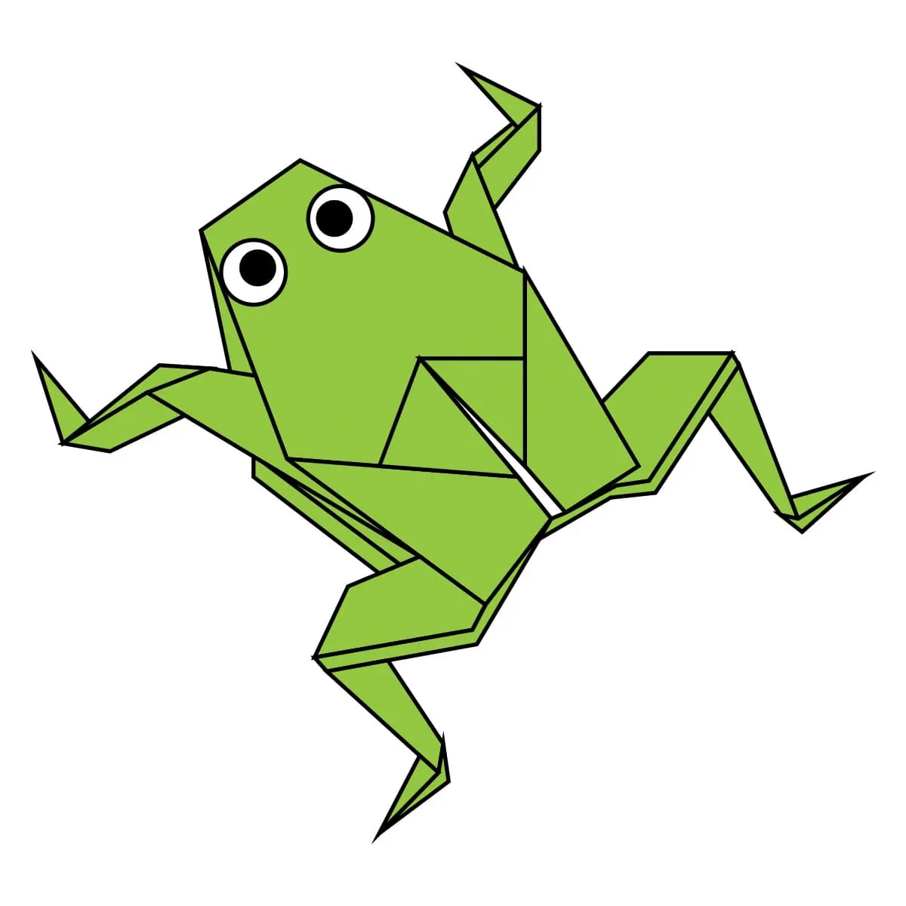
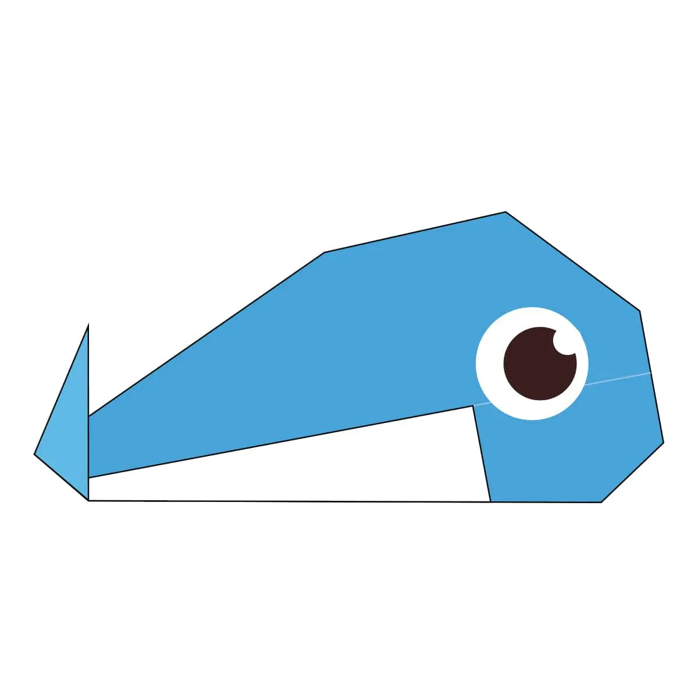
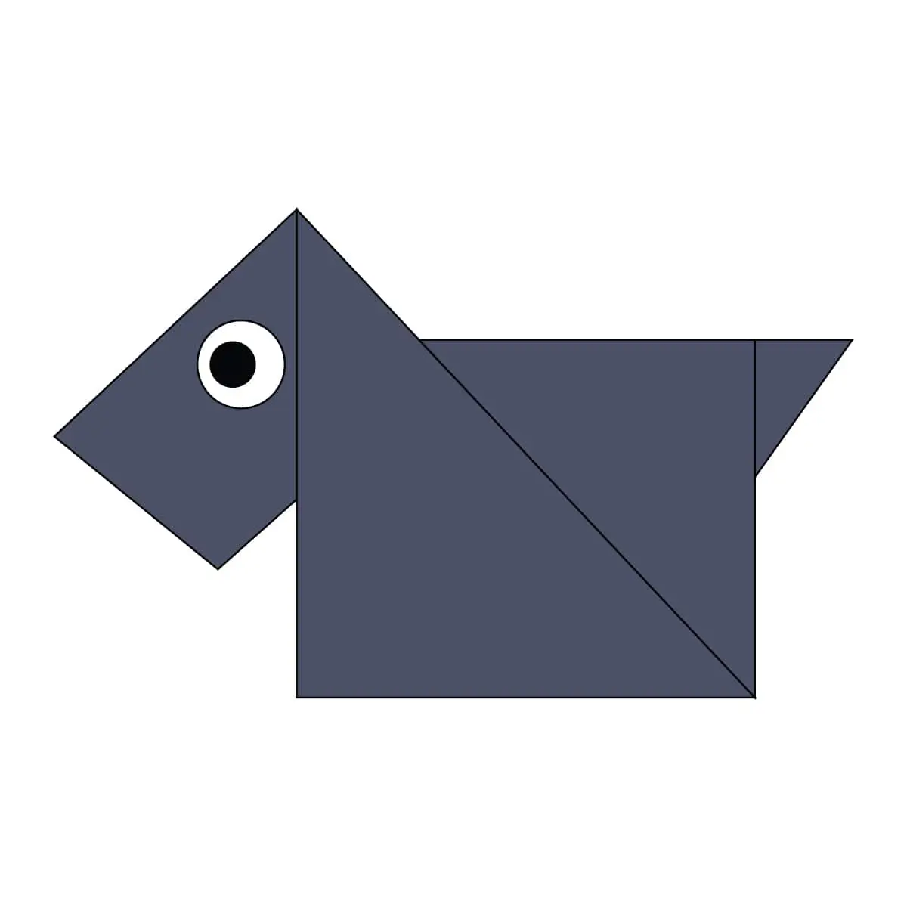

Camel

Interesting facts about Camels:
- Asian camels have two humps while, Arabian camels only have one.
- Camels have two rows of thick eyelashes to protect their eyes from the desert's dust.
- Camels have adapted to eating cactus despite their thorns, due to the scarcity of food in the desert.
Chameleon

Interesting facts about Chameleons:
- There are around 160 different species of chameleon. Thats a lot!
- Chameleon's eyes can rotate and focus separately on 180-degree arcs, so they can see two different objects at the same time.
- Chameleon change color for both camouflage and to display agression towards predators. Sometimes chameleons want to be seen to scare predators away.
Chicadas

Interesting facts about Chicadas:
- Chicadas only live 4-6 weeks.
- Chicadas are very loud and sound similar to construction equipment.
- When chicadas are invaded by a certian parasitic fungi, they will dig into the ground and explode.
Panda

Interesting facts about Pandas:
- Pandas have 6 fingers on each of their paws.
- All pandas are born pink and as they grow their fur turns white and black.
- Pandas diets are made up of bamboo and leaves, despite their sharp teeth.
Pigeon

Interesting facts about Pigeons
- Pigeons are believed to be the first domesticated birds.
- Carrier pigeon's 'homing talent' help many people communicate during WW2.
- Pigeons have excellent hearing abilities. They can detect the sounds of storms and natural disasters way before they ever occur.
Teddy Bear

Interesting facts about Teddy bears
- Teddy bears got their name from a story about Theodore Roosevelt (Teddy) involving a bear during a hunting trip.
- The first toy stuffed bear was created by German toymaker Margarete Steiff.
- After the Titanic sank in 1912, German toy company Steiff created 500 teddy bears to honor the victims.
Frog
Interesting facts about frogs
- Frogs don’t need to drink water, they absorb it through their skin.
- Frogs are found on every continent except Antarctica.
- Every year that a frog goes into hibernation, they form a new layer of bone. This helps calculate their age.
Whale
Interesting facts about whales
- The blue whale is the largest animal that ever lived and can grow to 90 or more feet and weigh as much as 24 elephants.
- Whales are often caught in fishing nets, despite their large size.
- Humpback whales don't eat a lot every year. They survive off of reserved fat throughout almost half of the year and occationally eat krill.
Scottie dog
Interesting facts about scottie
- The Scottish Terrier was bred to hunt den animals, such as rabbits, foxes, badgers, and rats.
- A Scottie is one of the most beloved Monopoly game pieces.
- The Scottie has won numerous titles at the Westminster Dog Show.